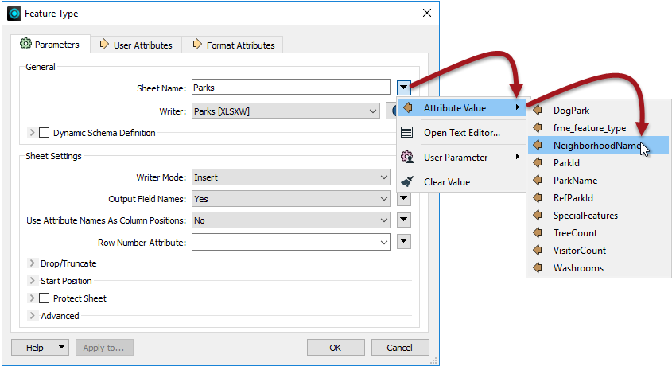

After completing this lesson, you’ll be able to:
A fanout is a setting applied to a writer or writer feature type in FME. They are a way for the workspace author to write data divided into groups of features.
Fanouts are one of the most powerful pieces of functionality within FME, capable of producing impressive results with minimal effort.
Groups are defined by either the value of a single attribute or a string constructed from a combination of attributes and fixed strings. They can be written to separate feature types or completely separate datasets.
Here, an author is “fanning out” a set of data into multiple outputs depending on a feature’s elevation attribute:
Because a fanout occurs as the data is written, it does not require multiple data flows inside the workspace. Therefore, this technique makes creating groups with minimal impact on the workspace canvas easy.
Another significant benefit of a fanout is the high degree of flexibility – and freedom from fixed-layer schemas – in return for minimal effort.
There are two types of fanout: feature type fanout and dataset fanout. We'll examine feature type fanouts in this lesson and look at dataset fanouts in the next lesson.
A feature type fanout delivers data to multiple feature types (layers/tables) within a single dataset. Taking the elevation example, here the output is a different feature type for each elevation value:

This fanout results in a DXF dataset containing multiple layers of data.
A feature type fanout is not a specific setting. Instead, it is defined by selecting an attribute for a writer feature type name, like so:

The Feature Type Name then changes to match what is selected:

In this case, each park record with a different neighborhood gets written to a different sheet of the Excel output spreadsheet. The Excel file will have a sheet named Downtown, a sheet named Kitsilano, and so on.